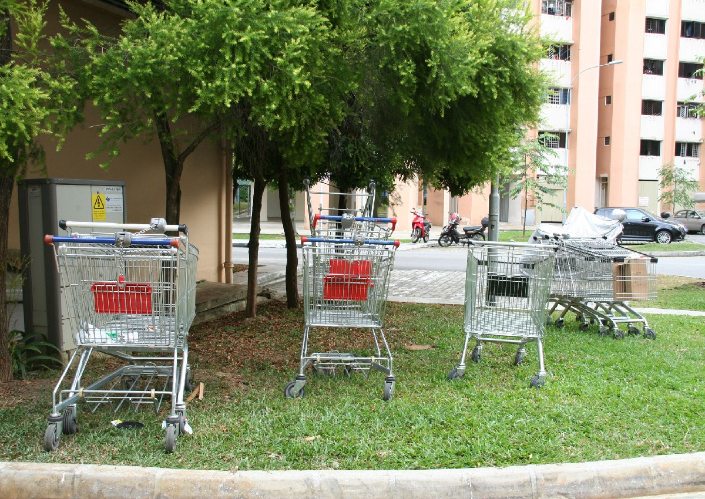

Abandoned Trolleys
NTUC has lost about 1,000 trolleys annually in the past three years. It spends an estimated $150,000 on repairing, replacing and retrieving trolleys each year.
The long-standing issue that has been bugging NTUC is customers misusing the trolleys and this needs to be addressed immediately. After countless research and findings about the situation, our team created myTrolley app to specifically target this problem. It aims to provide convenience, making the trolleys more accessible to the NTUC customers, as well as to discourage NTUC customers from wheeling trolleys away from the premises.
NTUC has lost about 1,000 trolleys annually in the past three years. It spends an estimated $150,000 on repairing, replacing and retrieving trolleys each year.
The current coin system of requiring customers to deposit $1 serves as a deterrent to trolley theft. Customers find it a hassle to search for new coins to unlock the trolley when shopping in the NTUC supermarket.

Do you know that NTUC outlets at Jurong Point mall, have the highest number of unreturned trolleys across all FairPrice outlets despite there being 17 trolley return bays at the mall? From the start of 2016, an average of 150 to 200 trolleys from Jurong Point have been taken out of the mall and cast aside every day.